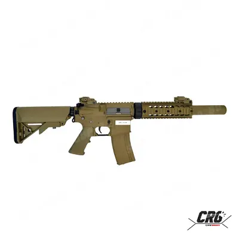
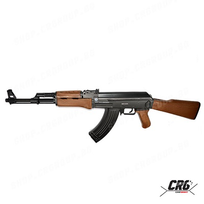

Ако искате читаво М4, е добре да се ориентирате към Specna Arms. Ето защо:
– Изработката на репликите е с качествени материали отвън- алуминий и закален полимер.
– Частите вътре са наистина метални. Повечето брандове казват че колелетата им са метални, но всъщност са направени от лесно чуплива сплав. Докато при Specna сме ги тествали с магнит и лови.
Какво има отвътре всъщност: метални колелета и метални зъби на буталото.
Производителя дава гаранция , че частите могат да издържат пружина м140. Още нещо много хубаво- репликата има бърза смяна на пружината. Само за минута може да подмените пружината, да вдигнете или свалите скороста, а това е от голяма полза за новите играчи. Защо? Като решите да я тунинговате не се нуждаете от сервиз и да се харчат излишни пари. Друго предимство: репликите идват с батерия 9.6 волта и смарт зарядно, докато другите брандове дават батерия 8.4 волта и стандартно зарядно. Цените на Specna Arms започват от 260лв и стигат до 440лв.
 Ако искате читаво здраво на купе АК вече отиваме на „CYMA“. Брандът произвежда АК близо 15 години ако не и повече. Какво можем да кажем за тях? Реплики без луфтове, доста се приближават до бойния вариант. Идват вече заводско на 130-135 метра в секунда (тоест не се нуждаят от ъпгрейд). Идват с батерия 8.4 волта и зарядно. Много добра групирана стрелба заради по- дългата и фиксирана цев, много хубава компресия и плътен звук. Цените започват от 220лв и достигат до 450лв зависимост от класа реплика която си харесате.